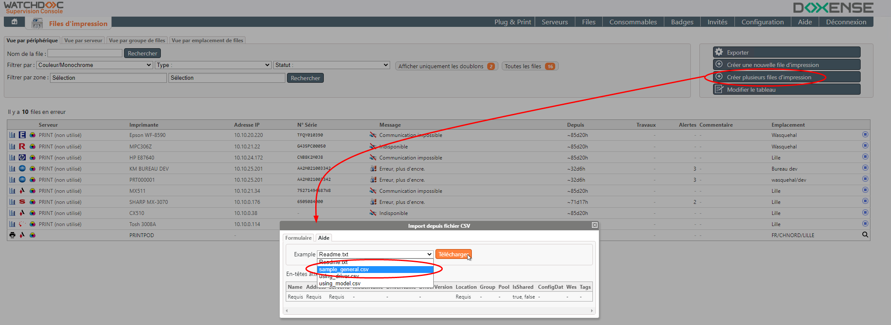
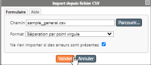
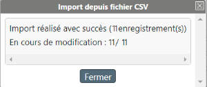
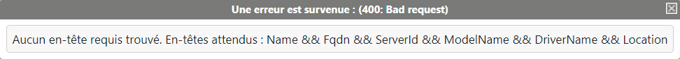

Cette procédure requiert le référencement préalable des files à créer dans un fichier .csv préformaté.
Une fois les files référencées, le fichier .csv peut être importé.
Référencer les files
Pour référencer les files dans le fichier sample_general.csv :
-
dans l'interface Files d'impression, cliquez sur Créer plusieurs files d'impression ;
-
dans l'interface Import depuis fichier CSV qui s'affiche, cliquez sur l'onglet Aide ;
-
dans la liste Exemple, sélectionnez le fichier sample_general.csv, puis cliquez sur Télécharger :

-
à l'aide d'un éditeur de texte ou d'un tableur, ouvrez le fichier téléchargé.
-
Pour chaque file à créer, saisissez une ligne comportant les informations suivantes (entre guillemets) :
{kind=link}
Nom : saisissez le nom de la file ;
Adresse : saisissez l'adresse de la file (FQDN ou IP) qui sera vérifiée immédiatement après import;
Id du serveur : saisissez l'identifiant du serveur sur lequel doit être installée la file d'impression ;
Activer le transfert : saisissez
vrai : pour désactiver le transfert (de la file, d'un serveur à l'autre)
faux : pour activer le transfert (de la file, d'un serveur à l'autre)
Ce paramètre permet de transférer une file déjà déclarée sur un serveur vers un autre serveur en supprimant la file sur le serveur d'origine.
Si une file existe déjà sur un serveur et que le fichier comporte son nom associé à un autre serveur et que le transfert n'est pas activé, cela revient à créer 2 files homonymes sur 2 serveurs différents.
Nom du modèle : saisissez le nom du modèle indiqué dans le template de la file ;
Nom du pilote : saisissez le nom du pilote associé à la file après vous être assuré que le pilote est bien référencé dans Plug & Print ;
Version du pilote : indiquez la version du pilote associé à la file
Groupe : précisez le groupe de files auquel vous souhaitez associer les files créées
Pool d'impression : précisez le pool d'impression dans lequel vous souhaitez intégrer les files créées
File partagée/File publiée : (file partagée
File d'impression générée par défaut par l'assistant lors de l'installation du périphérique d'impression réseau. Cette file ne dépend pas de Watchdoc. Elle a pour fonction de générer le spool correspondant aux travaux d'impression envoyés au périphérique./publiée) cochez la case si la file est partagée
Configurations : indiquez le nom d'un fichier de configuration (.dat) à appliquer aux files créées, après avoir vérifié que ce fichier de configuration a été associé à un pilote ou à un modèle d'imprimante
Type de WES : sélectionnez le type de WES
WES: précisez le WES que vous souhaitez appliquer sur les files créées.
DisableWesPush: saisissez vrai pour désactiver l'installation automatique du WES sur la file
Tags : (mots-clés) : saisissez un ou plusieurs mots clés associés au modèle d'imprimante. Ces mots clés serviront de filtres lors des recherches sur les modèles d'imprimantes
-
enregistrez votre fichier ainsi complété dans votre espace de travail.
Importer le fichier "sample_general.csv"
-
Dans l'interface Import depuis fichier CSV, revenez sous l'onglet Formulaire :

-
à droit du champ Chemin, cliquez sur le bouton ;
-
parcourez votre espace de travail pour y sélectionner le fichier sample_general.csv préalablement rempli ;
-
dans la liste des formats, sélectionnez celui qui correspond au format de votre fichier (en fonction du caractère de séparation utilisé dans le fichier .csv) ;
-
cochez la case "Ne rien importer si des erreurs sont présentes" pour n'importer les données que si elles sont intégralement correctes : dans ce cas, la moindre erreur dans le fichier .csv interrompt l'import. Si la case n'est pas cochée, les données correctes sont importées et les données erronées sont signalées.
-
cliquez sur le bouton pour déclencher l'import.
→ Un message informe du résultat de l'opération (succès ou échec):

èEn cas d'échec, les causes sont précisées pour vous permettre de corriger votre fichier d'import et de réitérer l'opération avec succès :
